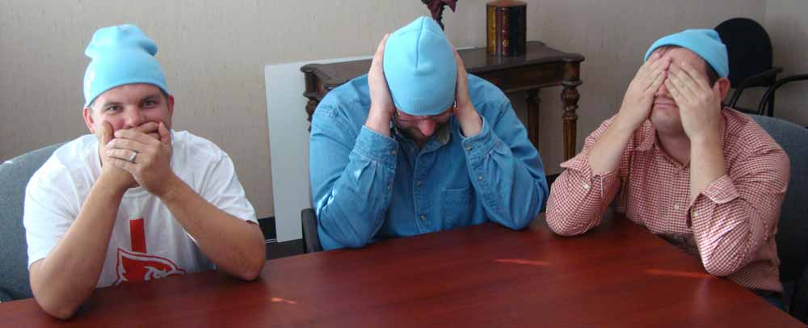

Meanwhile, in the Hall of Web Standards...
What's with the blue beanies?
November 30 is Blue Beanie Day - an international celebration of web standards observed by UI developers everywhere (including members of our Louisville dev team, pictured above). Learn more about the event on Tumblr, then check out photos of other developers in their blue beanies on Flickr.
Introducing the UI Super Friends
Team photos go here
Origin
In the early days of web development, the user interface was simply a means to an end. When someone wanted information on the Internet, they told the developer how they wanted it to look, and the developer returned just that. It was the age of the code monkey, a primordial beast with infinite capacity for drinking Mountain Dew and limited (if any) input on the tasks set before it.
As the web grew, it became a browser war zone. Users were stuck in a crossfire of cross-browser incompatibilities, bombarded by confusing interfaces, and living in constant fear of becoming trapped on a never-ending flash landing page. The world of the web seemed doomed... who would step up to write the many wrongs that lurked in the code?
The sobs of frustration of users everywhere eventually echoed into the deep bowels of the Internet, where the code monkeys toiled day-in and day-out. Upon hearing those cries, the code monkeys knew that they must take action to protect the users' best interests. With their knowledge of accessibility, optimization, and web standards, they could save users from the evil code slowly infecting the web.
It was on that day that the code monkeys evolved into User Interface Developers. Protected from naysayers by their blue beanies, the UI team rose to the surface of web development to ensure that every step of the web development process upheld the highest of web standards. Working alongside designers, copywriters, project managers, upper management, and even clients, the developers would not rest until the web was once again a safe place for users to get information.
As User Interface development became a more and more crucial component of web projects, the UI developers found themselves receiving a great deal more attention than they had back in their code monkey days. Seizing the opportunity to gain greater recognition in the web world and possibly wear capes, they renamed themselves the UI Super Friends. With their new not-so-secret identity in place, the UI Super Friends went forth to fight for the good of the user above all else.
Today, they find themselves engaged in battles of epic proportions, struggling to bring order to the massive, untamed beast that is the mobile web. The future of web technology may be uncertain, but the UI Super Friends will not rest until the user prevails.